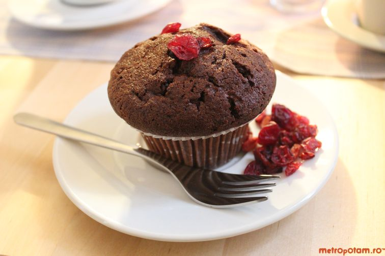

Când am mâncat prima dată desertul ăsta aveam senzația că-i complicat rău, că ai nevoie de cel puțin o baghetă magică pentru a face o prăjitură din care să izvorască șuvoi de ciocolată topită. M-am înșelat. E atât de simplu să faci chocolate lava încât mi se pare că am irosit o bună parte din viață având tot ce-mi trebuie la îndemână. Vă spun, puteți să vă descurcați perfect chiar dacă n-ați făcut altceva până acum decât clătite ori omletă.


Ingredientele necesare:
- 160g ciocalată amăruie
- 75g unt
- 70g zahăr pudră
- 30g făină
- 2 ouă
- 2 gălbenușuri
- praf de copt
- esentă de lămâie
Instrucțiuni pentru realizare desert:
- Amestecați cu un tel ouăle, făina și zahărul până obțineți o compoziție omogenă, fină, cremoasă.
- Puneți la topit untul și ciocolata (împreună) apoi amestecați-le cu compoziția obținută anterior. E important să turnați câte puțin, altfel riscați să transformați ouăle în omletă, ciocolata și untul fiind calde.
- Pentru copt puteți folosi fie forme din ceramică ori porțelan, fie forme de unică folosință, din aluminiu. Oricum ar fi, e important să le ungeți cu unt și să presărați zahăr peste ele, ca să nu se lipească prăjiturile de pereți.
- Umpleți formele cu amestec pentru prăjituri. Așezați-le într-o tavă și puneți-le în cuptorul încins la 200 de grade Celsius. Lăsați-le acolo pentru 10-12 minute. Semnul că-s gata: suprafața prăjiturilor crapă ca și pământul în vreme de secetă.
- Puteți să adăugați siropuri ori sosuri de fructe/caramel la desert, ori o linguriță de înghețată.
- Dacă aveți fructe de pădure proaspete puteți obține combinații fantastice.
